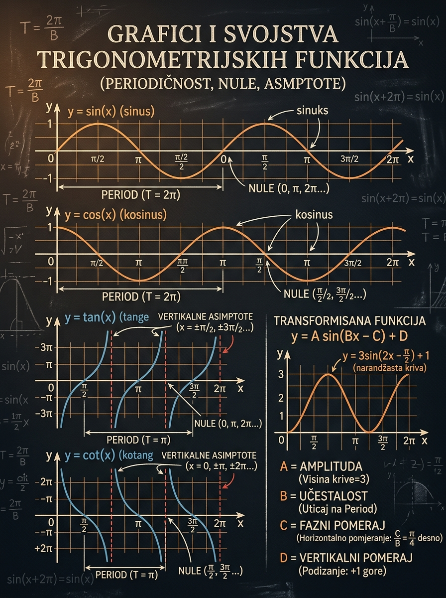

Da sigurno skiciraš \( \sin x \), \( \cos x \), \( \tan x \), \( \cot x \) i njihove transformacije preko parametara \(A\), \(B\), \(C\) i \(D\).
Matoteka znanje · Lekcija 38
Grafici i svojstva trigonometrijskih funkcija
U ovoj lekciji ne učiš samo da „prepoznaš” sinus ili tangens, već da iz formule odmah pročitaš kako izgleda grafik, gde se ponavlja, gde seče \(x\)-osu i gde funkcija uopšte nije definisana. To je presudno i za ručno skiciranje i za kasnije rešavanje jednačina i nejednačina na prijemnom.
\[y=A\sin(Bx+C)+D\]
\[y=A\tan(Bx+C)+D\]
Mešanje amplitude i periode, kao i traženje asimptota kod sinusa i kosinusa ili amplitude kod tangensa i kotangensa.
Brzo čitanje parametara, brojanje nula u intervalu i pravilno obeležavanje asimptota pre bilo kakvog računa.

Zašto je ova lekcija važna
Grafik je najbrži način da proveriš da li razumeš funkciju
Na prijemnom se često traži više od pukog izračunavanja. Moraš da znaš koliko rešenja postoji u intervalu, gde se funkcija menja iz pozitivne u negativnu, zašto neka vrednost ne pripada domenu ili kako izgleda jedna perioda. Sve to postaje mnogo lakše kada funkciju vidiš grafički.
Kada znaš nule, periode i asimptote, lakše pišeš opšte rešenje i brže brojiš koliko ga ima u zadatom intervalu.
Grafik odmah otkriva da \( \tan x \) nije definisan svuda i da pomeraj po \(y\)-osi može potpuno da ukloni nule sinusa ili kosinusa.
Ako umeš da nacrtaš jedan period, možeš da produžiš grafik na celu realnu osu i bez komplikovanog računanja.
Pedagoška poenta: ne pokušavaj da pamtiš svaki grafik kao posebnu sliku. Nauči osnovni model i transformacije. Tada svaki novi zadatak postaje samo pomeranje, sabijanje, istezanje ili refleksija već poznatog grafa.
Osnovni modeli
Prvo moraš da razlikuješ porodice grafika
Pre nego što uopšte uključiš parametre, važno je da vidiš razliku između dve „mirne” oscilacije, \( \sin x \) i \( \cos x \), i dve funkcije sa granama i asimptotama, \( \tan x \) i \( \cot x \). To je osnova cele lekcije.
- Da li je grafik omeđen između dve horizontalne vrednosti ili ide ka \( \pm \infty \).
- Da li se ponavlja na \(2\pi\) ili već na \( \pi \).
- Da li ima vertikalne asimptote.
- Da li nule dolaze u pravilnom koraku po \( \pi \) ili \( \frac{\pi}{2} \).
- \( \sin x \) i \( \cos x \) imaju istu periodu, ali različit početak talasa.
- \( \tan x \) i \( \cot x \) imaju istu periodu, ali su asimptote i nule pomerene.
- Sinus i kosinus nemaju vertikalne asimptote.
- Tangens i kotangens nemaju amplitudu jer nisu omeđeni.
\[ y=\sin x \]
- Domen: \( \mathbb{R} \)
- Skup vrednosti: \( [-1,1] \)
- Osnovna perioda: \( 2\pi \)
- Nule: \( x=k\pi \), \(k\in\mathbb{Z}\)
- Neparna funkcija, bez asimptota
\[ y=\cos x \]
- Domen: \( \mathbb{R} \)
- Skup vrednosti: \( [-1,1] \)
- Osnovna perioda: \( 2\pi \)
- Nule: \( x=\frac{\pi}{2}+k\pi \)
- Parna funkcija, bez asimptota
\[ y=\tan x \]
- Domen: \( \mathbb{R}\setminus\left\{ \frac{\pi}{2}+k\pi \right\} \)
- Skup vrednosti: \( \mathbb{R} \)
- Osnovna perioda: \( \pi \)
- Nule: \( x=k\pi \)
- Vertikalne asimptote: \( x=\frac{\pi}{2}+k\pi \)
\[ y=\cot x \]
- Domen: \( \mathbb{R}\setminus\{ k\pi \} \)
- Skup vrednosti: \( \mathbb{R} \)
- Osnovna perioda: \( \pi \)
- Nule: \( x=\frac{\pi}{2}+k\pi \)
- Vertikalne asimptote: \( x=k\pi \)
Mikro-provera: zašto \( \tan x \) nema amplitudu?
Zato što amplituda opisuje najveće odstupanje od srednje linije, a \( \tan x \) nije ograničen. Njegove vrednosti mogu da budu proizvoljno velike pozitivne ili negativne kada se približava asimptotama. Dakle, kod tangensa i kotangensa možeš govoriti o faktoru vertikalnog istezanja, ali ne o amplitudi.
Parametri grafa
Kako formula pomera, sabija i obrće poznati grafik
Najvažniji korak za studenta je da prestane da gleda formulu kao skup simbola i počne da je čita kao uputstvo za crtanje. U tome služe parametri \(A\), \(B\), \(C\) i \(D\).
\[ y=A\sin(Bx+C)+D,\qquad y=A\cos(Bx+C)+D \]
\[ y=A\tan(Bx+C)+D,\qquad y=A\cot(Bx+C)+D \]
Porodica funkcije određuje osnovni oblik, a parametri određuju kako će taj oblik biti transformisan.
- Prepoznaj porodicu: sinus, kosinus, tangens ili kotangens.
- Izračunaj periodu preko parametra \(B\).
- Nađi fazni pomeraj preko \( -\frac{C}{B} \).
- Tek onda koristi \(A\) i \(D\) da doradiš visinu, smer i položaj grafa.
\[ y=A\cdot \text{(osnovna funkcija)} \]
Za sinus i kosinus amplituda je \( |A| \). Ako je \(A<0\), grafik se preslikava preko \(x\)-ose. Kod tangensa i kotangensa \( |A| \) menja strminu grane, ali ne uvodi amplitudu.
\[ T_{\sin,\cos}=\frac{2\pi}{|B|}, \qquad T_{\tan,\cot}=\frac{\pi}{|B|} \]
Što je \( |B| \) veći, grafik je „zbijeniji” po \(x\)-osi. Perioda se uvek računa pomoću apsolutne vrednosti.
\[ Bx+C = B\left(x+\frac{C}{B}\right), \qquad x_0=-\frac{C}{B} \]
Fazni pomeraj čitaš iz unutrašnjosti argumenta. Ako je \(C>0\), grafik ide ulevo; ako je \(C<0\), ide udesno.
\[ y=\text{(transformisani osnovni grafik)}+D \]
Celoj funkciji dodaješ istu visinu. Kod sinusa i kosinusa srednja linija postaje \(y=D\), a kod tangensa i kotangensa cela grana se pomera naviše ili naniže.
1
Odredi osnovni tip grafa
Najpre vidi da li je baza \( \sin \), \( \cos \), \( \tan \) ili \( \cot \). Time znaš da li očekuješ talas ili grane sa asimptotama.
2
Nađi periodu
Bez periode ne znaš razmak ponavljanja. Ona ti odmah govori koliko širok treba da bude jedan osnovni deo grafa.
3
Označi fazni pomeraj
To je početna referentna tačka. Kod sinusa i kosinusa ona ti daje početak jednog perioda, a kod tangensa i kotangensa pomera nule ili asimptote.
4
Dodaj uticaj \(A\) i \(D\)
Na kraju menjaj visinu i smer. Za sinus i kosinus obeleži amplitudu i srednju liniju, a za tangens i kotangens položaj centralne visine grane.
Mikro-provera: u kom smeru ide grafik funkcije \( y=\sin(2x+\pi) \)?
Piši argument kao \(2\left(x+\frac{\pi}{2}\right)\). To znači da je fazni pomeraj \( -\frac{C}{B}=-\frac{\pi}{2}\), pa grafik ide ulevo za \( \frac{\pi}{2} \). Učenici često greše jer gledaju samo znak „plus” i ne dele sa \(B\).
Nule i asimptote
Ne traži ih napamet, već iz osnovnog modela
Kada se izgubiš u parametrima, vrati se osnovnom obliku. Nule i asimptote transformisanog grafa dobijaju se pomeranjem i sabijanjem poznatih nula i asimptota osnovne funkcije.
\[ \sin x = 0 \iff x=k\pi \]
\[ \cos x = 0 \iff x=\frac{\pi}{2}+k\pi \]
\[ \tan x = 0 \iff x=k\pi,\qquad \cot x = 0 \iff x=\frac{\pi}{2}+k\pi \]
\[ \tan x \text{ nije definisan za } x=\frac{\pi}{2}+k\pi \]
\[ \cot x \text{ nije definisan za } x=k\pi \]
Sinus i kosinus nemaju vertikalne asimptote. To je prvo što treba da proveriš pre crtanja.
\[ A\sin(Bx+C)+D=0 \iff \sin(Bx+C)=-\frac{D}{A} \]
\[ A\cos(Bx+C)+D=0 \iff \cos(Bx+C)=-\frac{D}{A} \]
Ovde vidiš zašto \(D\) menja nule: više ne rešavaš osnovnu jednakost sa nulom, nego tražiš gde trigonometrijska funkcija dostiže novu vrednost.
\[ \tan(Bx+C)\text{ ima asimptote kada } Bx+C=\frac{\pi}{2}+k\pi \]
\[ \cot(Bx+C)\text{ ima asimptote kada } Bx+C=k\pi \]
Parametar \(A\) ne pomera asimptote po \(x\)-osi. Njihov položaj zavisi samo od argumenta, odnosno od \(B\) i \(C\).
- Ako je \(D=0\), prvo koristi osnovne nule funkcije.
- Ako je \(D\neq 0\), prebacuješ ga na drugu stranu i rešavaš trigonometrijsku jednačinu.
- Na prijemnom često nije dovoljno opšte rešenje, već moraš da prebrojiš koliko njih upada u dati interval.
- Asimptote tražiš samo kod \( \tan \) i \( \cot \).
- Najpre napišeš gde baza nije definisana, pa tek onda rešavaš linearnu jednačinu po \(x\).
- Na skici prvo ucrtaj asimptote, pa tek onda granu između njih.
Mikro-provera: da li funkcija \( y=2+\sin x \) ima nule?
Nema. Pošto je \( \sin x \in [-1,1] \), sledi \( 2+\sin x \in [1,3] \). Dakle, grafik je ceo iznad \(x\)-ose. Ovo je klasičan primer zašto je parametar \(D\) važan i za graf i za jednačine.
Interaktivni deo
Canvas laboratorija za grafike i parametre
Menjaj porodicu funkcije i parametre, pa prati šta se događa sa periodom, faznim pomerajem, nulama i asimptotama. Ovo nije dekoracija: cilj je da stekneš osećaj kako izgleda grafik pre nego što ga ručno nacrtaš na papiru.
Brzi presetovi
Za \( \sin \) i \( \cos \) prati pet karakterističnih tačaka jednog perioda. Za \( \tan \) i \( \cot \) prvo obeleži asimptote, pa tek onda granu između njih.
U prozoru je prikazan interval \(x \in [-2\pi, 2\pi]\). Narandžasta površina označava jedan reprezentativan period, plava isprekidana linija je nivo \(y=D\), a roze isprekidane prave su vertikalne asimptote kada postoje.
\[ y=\sin x \]
Porodica: sinus.
Prikazani prozor: \(x \in [-2\pi, 2\pi]\).
Perioda: \(T=2\pi\)
Fazni pomeraj: \(x_0=0\)
Srednja linija: \(y=0\)
Amplituda: \(1\)
Nule: \(x=-2\pi,-\pi,0,\pi,2\pi\)
Asimptote: nema.
Skup vrednosti: \([-1,1]\).
Prvo izaberi funkciju bez pomeraja i proveri da li prepoznaješ njen osnovni oblik. Tek onda uključuj po jedan parametar. Tako ćeš jasnije videti šta tačno radi \(A\), šta \(B\), a šta fazni pomeraj.
Ako podigneš sinus dovoljno visoko, nule mogu nestati. Ako menjaš tangens, asimptote ostaju vezane za argument, a ne za parametar \(A\). To su dve česte ispitne zamke.
Vođeni primeri
Najvažnije je da pratiš redosled koraka
U vođenim primerima nije cilj samo da dobiješ rezultat, već da usvojiš način razmišljanja. Ako preskočiš redosled, često se izgubiš u znacima i pomerajima.
Primer 1: skica funkcije \( f(x)=2\sin\left(x-\frac{\pi}{3}\right)+1 \)
Ovo je dobar prvi primer jer sadrži amplitudu, fazni pomeraj i pomeraj po \(y\)-osi.
Osnovni
- \(A=2\), pa je amplituda \(2\).
- \(B=1\), zato je perioda \(T=2\pi\).
- Pošto je argument \(x-\frac{\pi}{3}\), grafik ide udesno za \( \frac{\pi}{3} \).
- \(D=1\), pa je srednja linija \(y=1\).
- Jedan period možeš crtati od \(x=\frac{\pi}{3}\) do \(x=\frac{7\pi}{3}\).
Karakteristične tačke jednog perioda dobijaju se kao kod običnog sinusa, samo posle pomeraja i promene visine:
\[
\left(\frac{\pi}{3},1\right),\;
\left(\frac{5\pi}{6},3\right),\;
\left(\frac{4\pi}{3},1\right),\;
\left(\frac{11\pi}{6},-1\right),\;
\left(\frac{7\pi}{3},1\right).
\]
Skup vrednosti je \( [-1,3] \).
Student često nacrta isti sinus kao i obično, pa tek onda pomeri celu sliku. Brže je da odmah odrediš novih pet ključnih tačaka jednog perioda.
Primer 2: funkcija \( g(x)=-\cos\left(2x+\frac{\pi}{2}\right) \)
Ovde vežbamo refleksiju, sabijanje po \(x\)-osi i fazni pomeraj.
Srednji
- \(A=-1\), dakle amplituda je \(1\), ali se grafik preslikava preko \(x\)-ose.
- \(B=2\), pa je perioda \(T=\frac{2\pi}{2}=\pi\).
- \(2x+\frac{\pi}{2}=2\left(x+\frac{\pi}{4}\right)\), pa grafik ide ulevo za \( \frac{\pi}{4} \).
- Nule dobijaš iz \( \cos\left(2x+\frac{\pi}{2}\right)=0 \), pa je \[ 2x+\frac{\pi}{2}=\frac{\pi}{2}+k\pi \Rightarrow x=\frac{k\pi}{2}. \]
Jedan koristan uvid je da važi identitet
\[
-\cos\left(2x+\frac{\pi}{2}\right)=\sin 2x.
\]
To znači da do istog grafa možeš doći i čistim transformacijama i pametnim identitetom. Na ispitu koristi ono što brže vidiš.
Primer 3: tangens sa asimptotama \( h(x)=\tan\left(2x-\frac{\pi}{4}\right) \)
Ovo je tipičan primer za pravilno crtanje jedne grane između dve asimptote.
Srednji
- Pošto je u pitanju tangens, očekuješ vertikalne asimptote i periodu \( \frac{\pi}{|B|}=\frac{\pi}{2} \).
- Nule dobijaš iz \[ 2x-\frac{\pi}{4}=k\pi \Rightarrow x=\frac{\pi}{8}+k\frac{\pi}{2}. \]
- Asimptote dobijaš iz \[ 2x-\frac{\pi}{4}=\frac{\pi}{2}+k\pi \Rightarrow x=\frac{3\pi}{8}+k\frac{\pi}{2}. \]
- Jedna centralna grana nalazi se između asimptota \(x=-\frac{\pi}{8}\) i \(x=\frac{3\pi}{8}\), a kroz nulu prolazi u tački \(x=\frac{\pi}{8}\).
Poenta je sledeća: kod tangensa najpre postavi asimptote, zatim srednju nulu između njih, pa tek onda iscrtaj rastuću granu od \( -\infty \) do \( +\infty \).
Primer 4: koliko nula ima \( p(x)=2\sin\left(3x-\frac{\pi}{2}\right) \) na intervalu \( [0,2\pi] \)?
Ovo je vrlo tipičan prijemni obrazac: opšte rešenje plus brojanje u intervalu.
Prijemni
- Pošto je faktor \(2\) ispred sinusa, nule se ne menjaju.
- Rešavaš \[ 3x-\frac{\pi}{2}=k\pi. \]
- Odakle sledi \[ x=\frac{\pi}{6}+k\frac{\pi}{3}. \]
- Sada samo proveri koje vrednosti upadaju u \( [0,2\pi] \): za \(k=0,1,2,3,4,5\) dobijaš dozvoljene nule.
Dakle, funkcija ima tačno 6 nula na intervalu \( [0,2\pi] \):
\[
\frac{\pi}{6},\ \frac{\pi}{2},\ \frac{5\pi}{6},\ \frac{7\pi}{6},\ \frac{3\pi}{2},\ \frac{11\pi}{6}.
\]
Ovde grafik pomaže da proceniš razmak između nula: pošto je perioda \( \frac{2\pi}{3} \), nule se javljaju češće nego kod običnog sinusa.
Ključne formule
Formula-kutak koji treba da umeš da prizoveš bez panike
Ove formule nisu cilj same po sebi. One su kratka mapa koja ti govori odakle kreće skica i šta obavezno proveravaš pre nego što napišeš odgovor.
\[ y=A\sin(Bx+C)+D,\quad y=A\cos(Bx+C)+D \]
\[ \text{amplituda}=|A|,\qquad \text{skup vrednosti}=[D-|A|,D+|A|] \]
\[ T_{\sin,\cos}=\frac{2\pi}{|B|} \]
\[ T_{\tan,\cot}=\frac{\pi}{|B|} \]
\[ x_0=-\frac{C}{B} \]
Ovo je jedna od najčešćih grešaka: znak faznog pomeraja je suprotan od znaka koji vidiš pored \(C\) u argumentu.
\[ \tan(Bx+C)\text{: asimptote kada }Bx+C=\frac{\pi}{2}+k\pi \]
\[ \cot(Bx+C)\text{: asimptote kada }Bx+C=k\pi \]
Nađi amplitudu, periodu i srednju liniju. Zatim ucrtaj pet karakterističnih tačaka jednog perioda i tek onda produži grafik periodično.
Nađi periodu i asimptote. Obeleži nulu ili referentnu tačku između asimptota, pa nacrtaj rastuću ili opadajuću granu.
Nule više ne čitaš direktno sa osnovne funkcije. Moraš da rešavaš jednačinu \( \text{baza}=-\frac{D}{A} \).
Ne zaboravi da se sve horizontalne udaljenosti dele sa \( |B| \): i perioda i razmak između nula i asimptota.
Česte greške
Greške koje obaraju inače dobar zadatak
Ovo nisu opšti saveti, već konkretne greške koje se stalno pojavljuju kada studenti prvi put sistematski crtaju trigonometrijske funkcije.
Iz izraza \(Bx+C\) ne čitaš pomeraj kao \(+C\), već kao \( -\frac{C}{B} \). Zbog toga \(x+\frac{\pi}{3}\) znači pomeraj ulevo, a ne udesno.
Ako je \(B<0\), perioda i dalje zavisi od \( |B| \). Znak utiče na smer, ne na samu dužinu periode.
Tangens i kotangens nisu omeđeni. Vertikalni faktor postoji, ali amplituda ne postoji.
To je pogrešan redosled. Kod tangensa i kotangensa prvo se crtaju asimptote, jer one određuju gde grana uopšte može da stoji.
Funkcija \(2+\sin x\) nema nule iako ih običan sinus ima. Pomeraj po \(y\)-osi menja preseke sa \(x\)-osom.
Ako ne odrediš jednu reprezentativnu periodu, lako dobiješ pogrešan razmak između karakterističnih tačaka i ceo grafik postaje nekonzistentan.
Veza sa prijemnim zadacima
Kako se ova lekcija realno pojavljuje na testu
Na prijemnom grafik trigonometrijske funkcije retko stoji kao izolovana tema. Obično je deo šireg zadatka: prebrojati rešenja, odrediti znak funkcije, nacrtati skicu ili povezati grafik sa jednačinom.
Prvo napišeš opšte rešenje za nule ili kritične tačke, a zatim pažljivo brojiš samo one vrednosti koje pripadaju traženom intervalu.
Skica grafa često štedi vreme: odmah vidiš gde je funkcija iznad ili ispod \(x\)-ose i gde menja znak.
Kod \( \tan \) i \( \cot \) domen nije cela realna osa. To ume da bude skrivena zamka i u jednačinama i u nejednačinama.
Kada kasnije rešavaš trigonometrijske jednačine, grafik ti pomaže da proveriš smisao dobijenog skupa rešenja i broj preseka sa zadatom horizontalom.
Mini-checklista za ispit: 1. Porodica funkcije. 2. Perioda. 3. Fazni pomeraj. 4. Nule ili asimptote. 5. Tek onda skica ili račun.
Vežbe
Proveri da li stvarno umeš da pročitaš grafik iz formule
Pokušaj najpre samostalno. Tek ako zapneš, otvori rešenje. Posebno obrati pažnju na redosled: porodica, perioda, pomeraj, pa nule i asimptote.
Zadatak 1
Odredi amplitudu, periodu, fazni pomeraj i srednju liniju funkcije \( f(x)=-3\sin(2x+\pi)+2 \).
Rešenje
\(A=-3\), pa je amplituda \(3\), a postoji i refleksija preko \(x\)-ose. \(B=2\), zato je perioda \(T=\frac{2\pi}{2}=\pi\).
Pošto je \(2x+\pi=2\left(x+\frac{\pi}{2}\right)\), fazni pomeraj je ulevo za \( \frac{\pi}{2} \), odnosno \(x_0=-\frac{\pi}{2}\).
Srednja linija je \(y=2\), a skup vrednosti je \( [2-3,2+3]=[-1,5] \).
Zadatak 2
Nađi nule funkcije \( g(x)=\cos\left(3x-\frac{\pi}{2}\right) \).
Rešenje
Kosinus je nula kada je argument \( \frac{\pi}{2}+k\pi \).
\[ 3x-\frac{\pi}{2}=\frac{\pi}{2}+k\pi \Rightarrow 3x=\pi+k\pi \Rightarrow x=\frac{\pi}{3}+k\frac{\pi}{3}, \quad k\in\mathbb{Z}. \]
Zadatak 3
Odredi vertikalne asimptote funkcije \( h(x)=2\tan\left(x+\frac{\pi}{6}\right)-1 \).
Rešenje
Asimptote tangensa se javljaju kada je argument jednak \( \frac{\pi}{2}+k\pi \).
\[ x+\frac{\pi}{6}=\frac{\pi}{2}+k\pi \Rightarrow x=\frac{\pi}{3}+k\pi, \quad k\in\mathbb{Z}. \]
Parametri \(2\) i \(-1\) ne utiču na položaj asimptota po \(x\)-osi.
Zadatak 4
Skiciraj jedan period funkcije \( p(x)=\cot(2x) \).
Rešenje
Pošto je u pitanju kotangens, osnovna perioda je \( \pi \), pa za \( \cot(2x) \) dobijaš \(T=\frac{\pi}{2}\).
Asimptote su kada je \(2x=k\pi\), odnosno \(x=k\frac{\pi}{2}\). Nule su kada je \(2x=\frac{\pi}{2}+k\pi\), pa je \(x=\frac{\pi}{4}+k\frac{\pi}{2}\).
Jedan period možeš uzeti na intervalu \( \left(0,\frac{\pi}{2}\right) \): tu je grana opadajuća, od \(+\infty\) ka \(-\infty\), i seče \(x\)-osu u \( \frac{\pi}{4} \).
Zadatak 5
Koliko nula ima funkcija \( q(x)=\sin(4x) \) na intervalu \( [0,\pi] \)?
Rešenje
Tražiš rešenja jednačine \( \sin(4x)=0 \), pa je \(4x=k\pi\), odnosno \(x=k\frac{\pi}{4}\).
Na intervalu \( [0,\pi] \) dozvoljene su vrednosti za \(k=0,1,2,3,4\). Dakle, ima ukupno 5 nula, uključujući krajnje tačke \(0\) i \(\pi\).
Zadatak 6
Odredi da li funkcija \( r(x)=2+\cos x \) ima nule i obrazloži bez rešavanja jednačine.
Rešenje
\( \cos x \in [-1,1] \), pa je \(2+\cos x \in [1,3]\). Dakle, grafik je stalno iznad \(x\)-ose i funkcija nema nule.
Ovaj zadatak proverava da li razumeš uticaj parametra \(D\), a ne samo da li umeš formalno da rešavaš trigonometrijske jednačine.
Završni rezime
Šta moraš da zapamtiš posle ove lekcije
Ako iz ove lekcije poneseš sledeće ideje, bićeš spreman i za crtanje i za sledeći korak: trigonometrijske jednačine i nejednačine.
Sinus i kosinus su omeđeni talasi; tangens i kotangens imaju grane i vertikalne asimptote.
Za \( \sin \) i \( \cos \): \( \frac{2\pi}{|B|} \). Za \( \tan \) i \( \cot \): \( \frac{\pi}{|B|} \).
Uvek računaš \(x_0=-\frac{C}{B}\). Tu studenti najlakše izgube tačan smer pomeraja.
Polaziš od osnovnog modela, zatim ga pomeraš i sabijaš. Kod \(D\neq 0\), nule dobijaš rešavanjem odgovarajuće jednačine.
Ključna poruka
Ne crtaš svaki trigonometrijski grafik od nule. Uvek polaziš od osnovnog modela koji već znaš, a zatim ga transformišeš. Kada to postane navika, zadaci sa grafikom, nulama i asimptotama prestaju da budu teški i postaju mehanički pregledni.